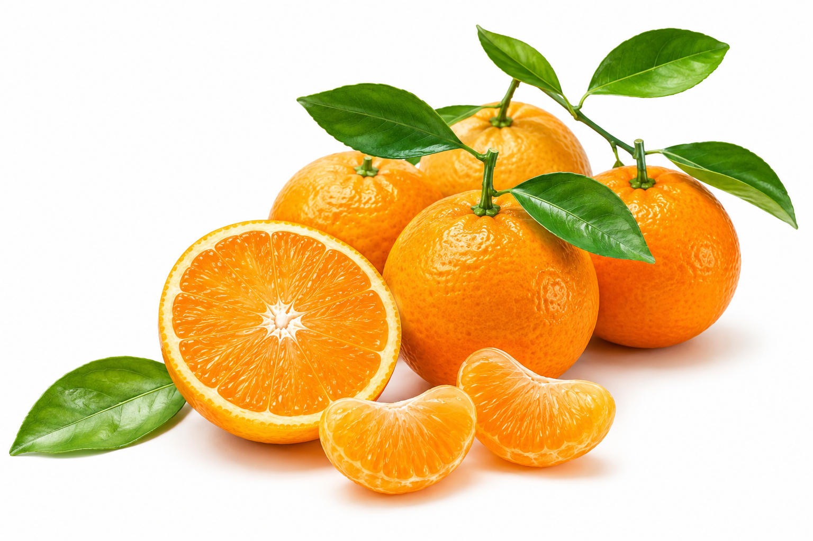
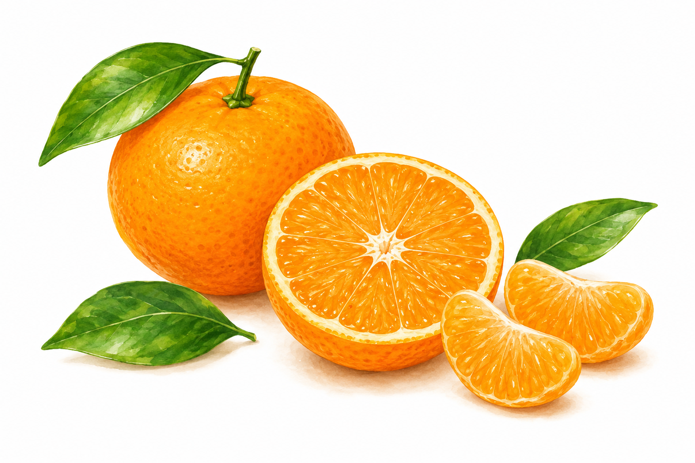
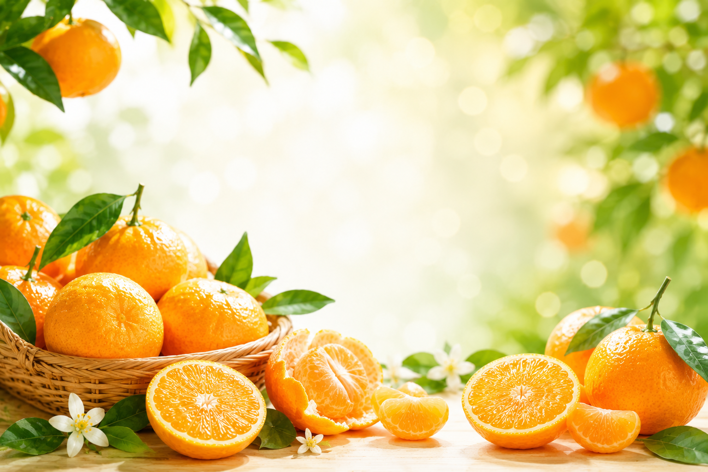

最新記事

オレンジのアロマ効果とは？気分を上げたいときに柑橘の香りが選ばれる理由
オレンジ精油の主成分リモネンが嗅覚を通じて脳・自律神経に働きかける仕組みを解説。ディフューザー・入浴・マッサージ・吸入の4つの使い方とみかんの皮で楽しむナチュラルアロマも紹介。
続きを読む →毎日届く・みかん雑学

パパみかん
PR
🍊 みかん一家のひとこと
パパみかん
「ビタミンと筋肉は裏切らない！」

ママみかん
「大丈夫、なんとかなるよ〜！」

チビみかん
「ぼくもやる！トレーニングした！」

プチみかん
「パパ、またやってるの？」
テーマごとに記事をまとめた「総まとめ」ページ。知りたいことを一気に読めます。

オレンジ精油の主成分リモネンが嗅覚を通じて脳・自律神経に働きかける仕組みを解説。ディフューザー・入浴・マッサージ・吸入の4つの使い方とみかんの皮で楽しむナチュラルアロマも紹介。
続きを読む →生搾りジュースのビタミンCは市販品より20〜40%多く、ヘスペリジンも豊富。搾る前に常温に戻してテーブルで転がすコツ、市販品を選ぶなら「ストレート果汁100%」を選ぶポイントを解説。
続きを読む →オレンジの皮にはヘスペリジン・ナリンギンが豊富。ピールジャム・砂糖漬け・スコーン・ドレッシング・フレーバー紅茶の5レシピと、農薬が気になる場合の下処理方法も解説。
続きを読む →低濃度（3,000〜8,000円）と高濃度（10,000〜40,000円）の違い・効果の根拠・G6PD欠損症禁忌・副作用リスクをまとめました。クリニックに行く前に知っておきたい基礎知識。
続きを読む →子ども向けサプリは対象年齢・添加物・GMP認定・形状の5点チェックが重要。年齢別ビタミンC推奨量（1〜2歳:35mg〜12〜14歳:95mg）と食事で補う優先順位も解説。
続きを読む →
食べた後のみかんの皮を乾燥させてお風呂へ。リモネン・ヘスペリジン・ペクチンの働きで血行促進・保湿・リラックス効果が期待できる陳皮風呂の作り方と注意点を解説。
続きを読む →GMPとはサプリの製造品質を保証する基準。GMP認定あり・なしの違い・パッケージでの確認方法・第三者試験や添加物など4つの追加チェックポイントをまとめました。
続きを読む →ビタミンEは脂溶性の抗酸化ビタミン。細胞膜の脂質過酸化を防ぐ仕組み・ビタミンCとの相乗効果・1日の目安量・アーモンドなど多く含む食品とサプリの注意点を解説。
続きを読む →ビタミンCの損失は「熱分解」と「水への溶出」の2種類。茹でる・炒める・蒸す・電子レンジ別の損失率を比較表で解説。調理の工夫で損失を減らす5つのコツも紹介。
続きを読む →オレンジのビタミンCとポリフェノール（ヘスペリジン）が肌にうれしい理由と、美容効果を引き出す食べ方のポイントを解説します。
続きを読む →みかんの旬は9〜4月まで品種で異なります。極早生・早生・中生・晩生・晩柑類の時期と、宮川早生・青島温州・せとか・不知火など人気品種の特徴を月別で解説。
続きを読む →運動中は活性酸素とコルチゾール増加でビタミンCが消耗されます。抗酸化・ストレス抑制・コラーゲン合成の3つの回復メカニズムと補給タイミングの目安を解説。
続きを読む →歯磨きで歯茎から血が出るのはビタミンC不足のサインかもしれません。壊血病の初期症状6種のチェックリストと現代人の潜在欠乏リスク・対策をまとめました。
続きを読む →みかんのヘスペリジン・β-クリプトキサンチンをサプリで摂るメリットと、食事では補いにくい理由を解説。旬・量・部位の3つの課題と賢い使い分け方を紹介します。
続きを読む →美容なら夜・免疫なら朝・疲労回復なら運動後。ビタミンCサプリの効果的な飲む時間帯を目的別に比較表で解説します。
続きを読む →1日あたりのコストで主要サプリを徹底比較。ビタミンC・Dは1日5〜15円台で最高コスパ。コスパを下げるNG選択や購入先の使い分けも解説。
続きを読む →みかんに特有のカロテノイド「β-クリプトキサンチン」の特徴・含有量・健康効果の研究を解説。1日何個で摂れるかとサプリとの使い分けも紹介。
続きを読む →オレンジに含まれる4種のポリフェノール（ヘスペリジン・ナリンギン・ノビレチン・リモネン）の特徴と効果を比較表で解説。果肉と皮の含有量の違いも紹介。
続きを読む →水溶性（ビタミンC・B群）と脂溶性（A・D・E・K）の違いを、摂り方・体への溜まり方・過剰摂取リスクの観点で整理します。
続きを読む →ビタミンCと鉄分を一緒に摂ると吸収率が上がるといわれる理由を、食べ合わせの観点から解説。みかんなど柑橘を使った組み合わせや食事の工夫をまとめました。
続きを読む →天然ビタミンCと合成ビタミンCに効果の違いはあるのかを解説。化学的には同じとされる理由や、果物とサプリの本当の違い、選ぶときのポイントをまとめました。
続きを読む →
スペイン産とアメリカ産のオレンジの違いを、味・品種・農薬や防カビ剤の表示の観点から解説。輸入オレンジを選ぶときのポイントや皮の使い方の注意点をまとめました。
続きを読む →日本で食べられるオレンジの旬を品種別のカレンダーで解説。ネーブル・バレンシア・ブラッドオレンジ・国産・輸入の時期の違いや、おいしい時期の選び方をまとめました。
続きを読む →柑橘系サプリの選び方を、代表的なフラボノイド「ヘスペリジン・ナリンギン・ノビレチン」の違いから解説。成分の特徴と選ぶときのポイントをまとめました。
続きを読む →ストレスとビタミンCの関係を副腎との関わりから解説。なぜストレスでビタミンCが消耗するといわれるのか、忙しい毎日での補い方をまとめました。
続きを読む →還元型ビタミンC（アスコルビン酸）と酸化型ビタミンCの違いを解説。サプリ表示の見方や選ぶときのポイント、みかんとの関係までまとめました。
続きを読む →ブラッドオレンジの赤い色の正体「アントシアニン」とは何か、期待される健康効果や栄養、おいしい食べ方・選び方をわかりやすく解説します。
続きを読む →ネーブルオレンジとバレンシアオレンジの違いを旬・味・見た目・使い方で比較。種なしで食べやすいネーブル、ジュース向きのバレンシアの特徴を解説します。
続きを読む →サプリを楽天とAmazonどちらで買うべきか、価格・品揃え・ポイント還元・配送・定期便を徹底比較。あなたに合った買い方の見極め方を解説します。
続きを読む →みかんに多いβ-クリプトキサンチンのサプリとは何かを解説。みかんを食べるのとサプリで摂るのの違い、使い分けや選び方をまとめました。
続きを読む →オレンジアレルギーの症状・原因・交差反応を解説。口がかゆくなる花粉食物アレルギー症候群との関係や、子どもに与えるときの注意点をまとめました。
続きを読む →オレンジとグレープフルーツの違いを栄養・カロリー・味・薬との相性で比較。グレープフルーツと薬の飲み合わせの注意点もわかりやすく解説します。
続きを読む →温州みかん・はるみ・せとか・デコポンなど人気品種の違いを、味・皮のむきやすさ・旬で徹底比較。好みや用途に合った品種の選び方を解説します。
続きを読む →ビタミンC・みかん由来サプリを3ヶ月続けたパパの実体験レポート。月ごとの変化・続けるコツ・正直な感想を誇張なくお伝えします。
続きを読む →サプリの定期購入トラブルと「解約できない罠」を解説。初回安値の落とし穴・回数縛り・解約方法の確認ポイントと安全な始め方を紹介します。
続きを読む →ドラッグストアで手軽に買えるコスパのいいサプリの選び方を解説。1日あたりのコスト・成分量・続けやすさの3つの視点でまとめました。
続きを読む →妊娠中に飲んでいいサプリと避けたい成分を整理。葉酸・鉄・カルシウムなど不足しがちな栄養と、ビタミンA過剰など注意点を解説します。
続きを読む →子どものビタミンC必要量を年齢別に解説。不足するとどうなるか・摂りすぎの心配・食事とサプリの考え方を子育て世帯向けにまとめました。
続きを読む →ビタミンC・D・β-クリプトキサンチンなど成分別の最適な飲むタイミングを解説。水溶性・脂溶性の違い・NGな組み合わせも詳しく紹介します。
続きを読む →コラーゲンとビタミンCを同時に摂ると美肌効果が高まる科学的な理由を解説。飲むタイミング・相乗効果・みかん由来フラボノイドとの組み合わせも紹介。
続きを読む →ビタミンCとコラーゲン合成の深い関係を科学的に解説。なぜビタミンCが必須なのか・必要量・食べ物とサプリの組み合わせ方を紹介します。
続きを読む →冬の風邪予防に効果的なサプリをランキング形式で比較。ビタミンC・D・亜鉛・みかん由来フラボノイドの科学的根拠とコスパを解説します。
続きを読む →ビタミンC・D・ヘスペリジンなど成分別に効果が出るまでの目安期間を解説。効果が出ない原因と3ヶ月続けるための習慣化のコツもご紹介。
続きを読む →ビタミンDが豊富な食べ物ランキングTOP10を紹介。日光浴では不足する現代人向けに、食事とサプリを使った効率的な補い方を解説します。
続きを読む →「水溶性だから安全」は誤解。ビタミンCの過剰摂取で起こる副作用・腎結石リスク・耐容上限量・安全な摂り方をわかりやすく解説します。
続きを読む →ビタミンCが美白に効く3つの科学的な仕組みを解説。メラニン抑制・コラーゲン合成・抗酸化の経路と、飲む・塗るの違いを詳しく説明します。
続きを読む →みかんを食べるのとサプリで成分を摂るのはどちらが効率的？栄養素の量・コスト・継続性を比較し、季節ごとの最適な使い分け方を解説します。
続きを読む →免疫サプリおすすめをコスパ・成分・飲みやすさで比較。ビタミンC・D・亜鉛・みかん由来フラボノイドの違いをわかりやすく解説し、自分に合った1本の選び方がわかります。
続きを読む →日本人の多くが不足しているビタミンD。慢性疲労・骨の痛み・免疫低下のサインをセルフチェックし、食事・日光・サプリで効率よく補う方法を解説します。
続きを読む →薬×サプリ・サプリ×サプリの危険な飲み合わせを一覧で解説。吸収を邪魔し合う組み合わせと、逆に効果が上がる相乗効果ペアも紹介します。
続きを読む →「ビタミンCで風邪が治る」は本当？コクランレビューをもとに科学的な真相を解説。できること・できないこと・正しい摂り方をわかりやすく紹介します。
続きを読む →みかんの旬が終わっても栄養を補える加工品を徹底紹介。100%ジュース・ドライみかん・みかんジャム・ポン酢の選び方と活用レシピ、子どもに安心な選び方まで解説します。
続きを読む →みかん搾り器・電動ジューサーのおすすめ5選を比較。手動シトラスプレスと電動タイプの違い、選び方のポイント、フレッシュみかんジュースをおいしく作るコツも解説します。
続きを読む →みかんを箱でまとめ買いする方法を徹底解説。スーパーvs箱買いのコスト比較、ふるさと納税活用のメリット・選び方、おすすめ産直5kg、保存方法まで丸ごとわかります。
続きを読む →国内で流通する柑橘品種30種を早生・中生・晩生・タンゴール・雑柑に分類して解説。旬の時期・産地・糖度・味の特徴までわかりやすくまとめました。
続きを読む →オレンジ・みかん由来のサプリおすすめランキングを紹介。ヘスペリジン・ビタミンC・β-クリプトキサンチンなどフラボノイド系サプリの選び方と効果を比較解説します。
続きを読む →産直オレンジの通販おすすめを厳選紹介。美味しい食べ比べセットの選び方、品種・産地・価格帯での比較も解説。楽天・Amazon・ふるさと納税での賢い購入方法もご紹介。
続きを読む →子どもにオレンジを与えるのはいつから？離乳食期から幼児期まで年齢別の与え方、アレルギー対策、注意すべきポイントを子育てパパが丁寧に解説します。
続きを読む →オレンジで免疫力を上げる正しい食べ方を解説。ビタミンC・フラボノイド・β-クリプトキサンチンの免疫作用から、1日に何個食べるべきか、いつ食べると効果的かまで丁寧に説明します。
続きを読む →オレンジでダイエットできる？カロリー・食物繊維・クエン酸・ビタミンCの観点から効果を検証。食べるタイミングや量など、正しい食べ方と注意点を子育てパパが解説します。
続きを読む →サプリを朝に飲むべきか夜に飲むべきか、種類別・目的別に解説。ビタミンC・鉄・マグネシウム・プロテインなど主要サプリの最適なタイミングをまとめました。
続きを読む →ビタミンCサプリの最適な飲み方・タイミングを解説。朝と夜どちらがいい？食前・食後は？分割摂取の効果は？子育てパパが実践している飲み方のコツも紹介します。
続きを読む →ビタミンCサプリの選び方を成分・配合量・剤形・コスパの4つの観点で解説。天然vs合成、錠剤vsパウダーの違いも比較。子育て中の忙しいパパにも使いやすいサプリ選びをガイドします。
続きを読む →ビタミンCが多い食べ物ランキング20選を紹介。みかん・キウイ・ブロッコリーなど、意外な食材も含めて含有量データつきで徹底解説。毎日の食事で効率よく摂る方法も。
続きを読む →市販の果汁100%オレンジジュースをメーカー別に徹底比較。成分・味・コスパで選ぶポイントと、スーパーで買えるおすすめ商品を子育てパパ目線で紹介します。
続きを読む →輸入オレンジに使われる農薬・防カビ剤（OPP・TBZ・イマザリル）の実態と安全性を解説。皮を食べるときの注意点と国産との違いも紹介。
続きを読む →オレンジのビタミンC含有量をみかん・レモン・キウイと比較。1日の推奨量を食事だけで摂る方法と、サプリとの使い分け方も解説。
続きを読む →ヘスペリジンサプリを1ヶ月飲んだ正直な体験レポート。冷え性・血流・疲労感への変化と、Amazonの口コミ傾向・向いている人をまとめました。
続きを読む →成人のビタミンC推奨摂取量は100mg、上限目安は2000mg。年齢・性別・妊婦別の一覧表と、みかん・食事・サプリで効率よく摂る方法を解説。
続きを読む →オレンジとみかんの栄養・ビタミンC・カロリー・糖質・味の違いをHTML比較表で解説。目的別の使い分け方も紹介します。
続きを読む →みかんのビタミンC・β-クリプトキサンチン・ヘスペリジンが肌に与える美容効果を解説。シミ・コラーゲン・抗酸化の3つの仕組みと毎日の食べ方のコツ。
続きを読む →みかんで口がかゆくなるのはアレルギー？仮性アレルゲン反応・花粉症との交差反応・子どもへの対処法まで分かりやすく解説します。
続きを読む →ヘスペリジン・β-クリプトキサンチン・ビタミンCを含むみかん由来サプリの選び方とランキング5選。毎日のみかんとの併用で効率よく摂取する方法も紹介。
続きを読む →農家直送みかんの通販サービス比較。楽天・ポケマル・食べチョク・ふるさと納税・JA直売所の特徴と産地別の選び方のコツを解説。
続きを読む →みかんの白いスジに豊富なヘスペリジン（ビタミンP）の血流改善・冷え性・抗炎症効果を科学的に解説。毎日2〜3個で自然に摂取できる。
続きを読む →ふるさと納税でみかんを選ぶなら愛媛・和歌山・静岡・熊本・長崎がおすすめ。楽天ふるさと納税でポイント最大化する方法も解説。
続きを読む →みかん1個のビタミンC含有量は約32mg。成人の1日推奨量100mgに対してみかん3個でほぼ充足。レモン・キウイ・パプリカとの比較表で解説。
続きを読む →みかんのビタミンC・ヘスペリジン・β-クリプトキサンチンが免疫力に与える科学的な効果を解説。毎日2〜3個を習慣にする具体的な方法も紹介。
続きを読む →みかんは離乳食後期（9〜11ヶ月）ごろから与えられます。月齢・年齢別の適量・アレルギー対策・子どもが喜ぶ食べ方の工夫まで詳しく紹介。
続きを読む →みかん1個は約45kcal。低カロリーでダイエット向きだが果糖には注意も必要。他の果物とのカロリー比較や、ダイエット中の正しい食べ方を解説。
続きを読む →みかんの1日の適量は大人で2〜3個が目安。カロリー・糖質・ビタミンCのバランスから年齢別の適量と、食べすぎたときのサインを詳しく解説。
続きを読む →みかんを食べ過ぎると手が黄色くなる「柑皮症」。黄疸との違い・体への影響・自然に戻るまでの期間を分かりやすく解説。子どもの柑皮症についても。
続きを読む →みかんを食べるとき、白いスジ（アルベド）を取り除いている人も多いのでは？実はこのスジ、栄養の宝庫なんです。ヘスペリジンやペクチンが豊富で…
続きを読む →こたつにみかんはなぜこんなにも合うのか？ビタミンC補給・低カロリー・香りのリラックス効果など科学的な理由と日本独自の文化的な背景を解説。
続きを読む →みかんを長持ちさせる正しい保存方法を解説。常温・冷蔵・冷凍それぞれの特徴と、箱みかんのカビを防ぐ「逆さ収納」など農家直伝のテクニックを紹介。
続きを読む →パパみかんのnoteに登場する家族キャラクターたちです。noteでも毎日活躍中！

2児のパパ。筋トレ・みかん補給・スキマ時間の勉強が趣味。難しい言葉を使わない主義の「意識高い系みかん」を目指し中。

いつもニコニコ、優しくて明るい、ちょっと天然。どんなカオスな状況でもにこにこ対応できる「母パワー」の持ち主。

とにかく動く、止まることを知らない元気いっぱいの男の子。パパの筋トレに参加するが腕立て1回で満足して倒れる。

2歳なのに家族の中で一番しっかりしている。冷静で観察力が高く、鋭いツッコミを放つ。甘えん坊な一面もある。
PR・パパが実際に使っているもの